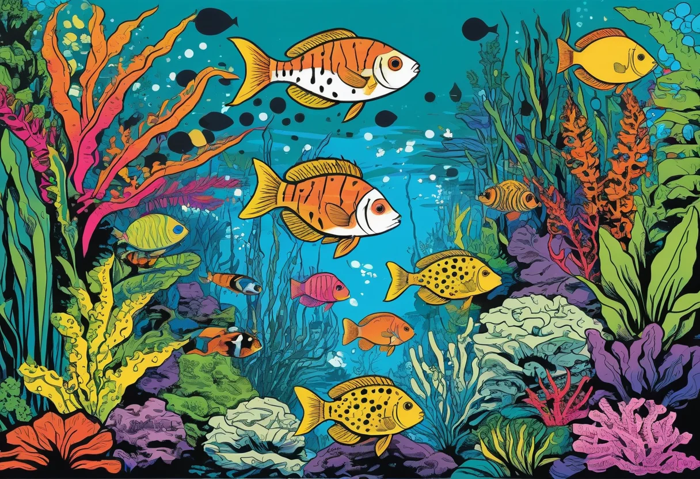

Biotop-Aquarium planen: Amazonas, Asien und Schwarzwasser natürlich nachbilden
Ein Biotop-Aquarium ist mehr als nur ein Aquarium – es ist ein Fenster in eine faszinierende Unterwasserwelt, die es so oder so ähnlich wirklich gibt. Anders als ein bunt gemischtes Gesellschaftsbecken oder ein künstlerisch gestaltetes Aquascape folgt ein Biotop einer strengen Idee: Wasserwerte, Pflanzen, Hardscape und Fischbesatz stammen aus einer einzigen natürlichen Region. Das Ergebnis ist ein in sich schlüssiges, harmonisches und oft überraschend pflegeleichtes Ökosystem, das nicht nur schön aussieht, sondern auch biologisch stimmig ist.
In diesem Guide zeige ich dir, wie du ein Biotop-Aquarium für Amazonas, Asien oder Schwarzwasser planst, einrichtest und pflegst. Du erfährst, welche Wasserwerte typisch für jede Region sind, welche Pflanzen und Fische sich für ein naturnahes Biotop eignen, wo die Herausforderungen liegen und warum ein Biotop oft stabiler ist als ein bunter Mix.
Biotop-Idee verstehen – was macht ein Biotop aus?
Ein Biotop-Aquarium bildet einen natürlichen Lebensraum möglichst originalgetreu nach. Das bedeutet: Alle Elemente – Wasser, Bodengrund, Pflanzen, Dekoration, Tiere – stammen aus derselben geografischen Region, idealerweise sogar aus demselben konkreten Lebensraum (z. B. ein klares Weißwasser-Strömungsbecken im Amazonas-Tiefland oder ein huminsäurereicher Torfsumpf in Südostasien).
Der Reiz eines Biotops liegt in der Authentizität. Ein gut geplantes Biotop ist kein Sammelsurium aus beliebigen Aquarienfischen, sondern ein funktionierendes Ökosystem, in dem die Tiere die Wasserwerte, das Futter und die Versteckmöglichkeiten wiederfinden, die sie aus der Natur kennen. Das macht die Pflege oft einfacher: Die Fische sind stressfreier, seltener krank und zeigen ihr natürliches Verhalten – ob es nun das Balzverhalten der Zwergbuntbarsche oder das scheue Tarnen der Asiatischen Saugschmerlen ist.
Die drei häufigsten Biotop-Typen
Für Aquarianer gibt es drei große Biotop-Kategorien, die sich im Hobby etabliert haben: Amazonas (mit den Untertypen Weiß-, Klar- und Schwarzwasser), Asien (Südostasien, Thailand, Indonesien) und das reine Schwarzwasser (oft als Mischform oder eigener Stil). In allen drei Kategorien lassen sich sowohl Einsteiger- als auch Profi-Projekte verwirklichen.
Amazonas-Becken – der Klassiker unter den Biotopen
Das Amazonas-Becken ist der beliebteste Biotop-Typ und das aus gutem Grund: Der Amazonas-Regenwald ist der artenreichste Lebensraum der Erde, und seine Unterwasserwelt ist von atemberaubender Vielfalt. Die Wasserqualität variiert stark: Weißwasser (trüb, nährstoffreich), Klarwasser (sauber, neutral) und Schwarzwasser (dunkel, sauer). Alle drei Varianten sind spannend für Aquarianer, jede mit eigenen Herausforderungen.
Wasserwerte für das Amazonas-Becken
| Parameter | Weißwasser | Klarwasser | Schwarzwasser |
|---|---|---|---|
| pH-Wert | 6,5–7,5 | 6,0–7,0 | 4,5–6,0 |
| Gesamthärte (GH) | 4–12 °dH | 0–4 °dH | 0–3 °dH |
| Karbonathärte (KH) | 3–8 °dH | 0–2 °dH | 0–1 °dH |
| Leitfähigkeit | 50–200 µS/cm | 10–50 µS/cm | 10–40 µS/cm |
| Temperatur | 26–30 °C | 25–28 °C | 25–28 °C |
| Besonderheit | Leicht trüb, schwebstoffreich | Kristallklar, nährstoffarm | Durch Huminstoffe braun gefärbt |
Pflanzen für das Amazonas-Biotop
Der Amazonas ist nicht dicht mit Unterwasserpflanzen bewachsen – viele Bereiche sind von Schwimmpflanzen und emersen (über Wasser wachsenden) Pflanzen dominiert. Für das Aquarium eignen sich dennoch einige typische Arten:
- Echinodorus-Arten (Amazonas-Schwertpflanze): Der Klassiker. Großblättrig, robust, anspruchslos. Ideal als Solitärpflanze.
- Vallisneria-Arten (Wasserschraube): Bildet lange, fließende Bänder, die an ruhige Amazonas-Nebenarme erinnern.
- Cryptocoryne-Arten: Mittel- und Hintergrundpflanzen aus Südamerika – robust und vielseitig.
- Schwimmpflanzen: Froschbiss (Limnobium laevigatum) oder Wasserlinsen sind typisch für Amazonas-Gewässer und spenden Schatten.
- Moos: Javamoos (Vesicularia dubyana) auf Wurzeln erinnert an die moosbewachsenen Äste am Flussufer.
Typische Amazonas-Fische
- Neonsalmler (Paracheirodon innesi): Der wohl bekannteste Amazonas-Fisch. Schwarm von 10–15 Tieren.
- Roter Neon (Paracheirodon axelrodi): Noch farbenprächtiger, aber etwas empfindlicher als der Neonsalmler.
- Panzerwelse (Corydoras-Arten): Bodenbewohner aus Südamerika. Arten wie Corydoras paleatus oder C. aeneus sind robust.
- Zwergbuntbarsche (Apistogramma-Arten): Die "Kleinode Amazoniens". Paarweise halten, zeigen faszinierendes Brutpflegeverhalten.
- Skalare (Pterophyllum scalare): Majestätisch, aber für größere Becken (ab 150 cm Länge).
- Antennenwelse (Ancistrus): Für die Algenkontrolle und als typischer Amazonas-Bewohner.
- Rote von Rio (Hyphessobrycon flammeus): Kleiner, friedlicher Schwarmfisch aus dem Amazonas-Gebiet.
Asien-Becken – Südostasien natürlich nachbilden
Die Flüsse und Sümpfe Südostasiens sind die Heimat vieler beliebter Aquarienfische – darunter Kampffische, Barben, Rasboras und Saugschmerlen. Der Lebensraum ist stark saisonal geprägt: In der Regenzeit steigt der Wasserstand, der pH-Wert sinkt, die Leitfähigkeit fällt. In der Trockenzeit konzentrieren sich die Fische auf kleinere Wasserflächen, die oft von Laub bedeckt sind.
Wasserwerte für das Asien-Biotop
| Parameter | Asien (Tiefland) | Asien (Bergbach) |
|---|---|---|
| pH-Wert | 5,0–7,0 | 6,5–7,5 |
| Gesamthärte (GH) | 0–6 °dH | 4–10 °dH |
| Karbonathärte (KH) | 0–3 °dH | 2–6 °dH |
| Temperatur | 24–28 °C | 22–26 °C |
| Strömung | Ruhig bis moderat | Stark, sauerstoffreich |
Pflanzen für das Asien-Biotop
In asiatischen Gewässern dominieren andere Pflanzen als in Südamerika. Typisch sind:
- Bucephalandra-Arten: Aufsitzerpflanzen aus Borneo, die auf Steinen und Wurzeln wachsen. Langsam, aber extrem dekorativ.
- Cryptocoryne-Arten: Viele Arten stammen aus Asien (C. wendtii, C. balansae, C. parva). Ideal für Mittel- und Vordergrund.
- Javafarn (Microsorum pteropus): Auch aus Asien, perfekt als Aufsitzerpflanze auf Holz.
- Vallisneria nana: Eine schmale Vallisnerie aus Australien/Asien, ideal für asiatische Flussläufe.
- Schwimmpflanzen: Salvinia cucullata (Muschelblume) und Limnobium sind in Asien heimisch.
Typische asiatische Fische
- Kampffisch (Betta splendens): Der Klassiker aus Thailand. Männchen einzeln oder im Haremsbecken.
- Zebra- und Leopardbärblinge (Danio rerio, Danio nigrofasciatus): Aktive Schwarmfische aus Indien und Südostasien.
- Keilfleckbärbling (Trigonostigma heteromorpha): Ruhiger Schwarmfisch, ideal für asiatische Biotope.
- Saugschmerlen (Gastromyzon, Sewellia): Für asiatische Bachläufe mit kühlem, sauerstoffreichem Wasser und starker Strömung.
- Zwergschmerlen (Pangio-Arten): Schlängelnde Bodenfische, die sich in Laubansammlungen verstecken.
- Rasbora-Arten: Kleine, farbenfrohe Schwarmfische wie Rasbora maculata oder Rasbora borapetensis.
Schwarzwasser – das dunkle, saure Biotop
Schwarzwasser ist kein eigener geografischer Raum, sondern eine Wasserqualität, die sowohl im Amazonas als auch in Südostasien vorkommt. Die bräunliche Färbung entsteht durch gelöste Huminstoffe aus zerfallenden Pflanzenresten – vor allem Blättern, Rinden und Wurzeln. Das Wasser ist weich, sauer und extrem nährstoffarm. Viele der beliebtesten Aquarienfische haben sich an diese Bedingungen angepasst.
Schwarzwasser einrichten
- Färbung: Erlenzapfen, Seemandelbaumblätter oder Torfextrakte färben das Wasser und senken den pH-Wert. Die Konzentration bestimmst du selbst – je mehr Laub, desto dunkler und saurer wird das Wasser.
- Bodengrund: Feiner Sand (kein Kies) – am besten in einer natürlichen, bräunlichen Farbe. Kein heller Kies, der stört die natürliche Wirkung.
- Hardscape: Moorkienholz und Wurzeln sind ein Muss. Sie geben nicht nur Gerbsäure ab, sondern dienen auch als Versteck und Sitzplatz für die Fische.
- Laubschicht: Eine Schicht aus Buchen-, Eichen- oder Seemandelbaumblättern auf dem Bodengrund sieht nicht nur authentisch aus, sondern bietet Mikrofauna eine Lebensgrundlage. Garnelen und Saugschmerlen lieben sie.
- Technik: Ein leistungsstarker Filter ist wichtig, weil die Huminstoffe das Wasser trüben können. Ein UV-Klärer ist nicht sinnvoll – er zerstört die Huminstoffe, was den Schwarzwasser-Effekt aufhebt.
🛒 Seemandelbaumblätter und Erlenzapfen
Huminstoffe für naturnahe Schwarzwasser-Setups – die Grundlage für ein authentisches Biotop.
Werbelink: Als Amazon-Partner verdienen wir an qualifizierten Käufen.
Wasserwerte und Huminstoffe – die chemische Basis des Biotops
Die Wasserwerte sind das Fundament jedes Biotop-Aquariums. Ohne die richtigen Werte werden die Fische krank, zeigen kein natürliches Verhalten und vermehren sich nicht. Für die weichen, sauren Biotope (Schwarzwasser, Amazonas-Weichwasser, Asien-Tiefland) brauchst du Osmosewasser oder vollentsalztes Wasser, das du mit einem speziellen Aufhärtesalz wieder auf die Zielwerte bringst.
Wasseraufbereitung für Biotope
- Osmosewasser ansetzen: Fülle die benötigte Menge Osmosewasser (aus der Osmoseanlage) in einen sauberen Behälter.
- Aufsalzen: Je nach Zielwerten gibst du ein Biotop-Aufsalz (z. B. von Dennerle, JBL oder sera) in der empfohlenen Dosierung hinzu. Für reines Schwarzwasser ist oft gar kein Salz nötig – die natürliche Mineralisierung durch Laub und Boden reicht.
- Huminstoffe zugeben: Erlenzapfen (2–3 Stück pro 100 Liter) oder Seemandelbaumblätter (5–10 Stück pro 100 Liter) sorgen für die typische Färbung und senken den pH-Wert um 0,5–1,0 Einheiten.
- pH-Kontrolle: Der pH-Wert stellt sich innerhalb von 1–3 Tagen ein. Kontrolliere ihn täglich. Bei Bedarf mit Torfextrakt oder Schwarzwasser-Konzentrat nachhelfen.
- Stabilität prüfen: Die KH sollte bei unter 2 °dH liegen, damit der pH-Wert nicht schwankt. Eine hohe KH (über 4 °dH) verhindert das Absinken des pH-Werts – dann sind mehr Huminstoffe nötig.
Pflanzen und Hardscape – die Gestaltung des Biotops
Die Einrichtung eines Biotops folgt anderen Regeln als die eines Aquascapes. Es geht nicht um künstlerische Komposition, sondern um Natürlichkeit. Die Materialien sollten aussehen, als wären sie direkt aus dem Flussbett entnommen.
Bodengrund
Für die meisten Biotope ist feiner Sand ideal. Er hat eine natürliche Körnung, lässt Sauerstoff an die Wurzeln und sieht aus wie ein natürlicher Flussboden. Farblich: Beige-braun für Amazonas- und Asien-Becken, dunkelbraun bis schwarz für Schwarzwasser. Achte darauf, dass der Sand kalkfrei ist – ein Essigtest gibt Aufschluss. Kein bunter Zierkies, der zerstört den natürlichen Eindruck.
Wurzeln und Holz
Moorkienholz ist das Material der Wahl für die meisten Biotope. Es sinkt von Anfang an, gibt langsam Huminstoffe ab und hat eine natürliche, filigrane Struktur. Für Amazonas-Becken sind auch Mangrovenwurzeln geeignet. Wichtig: Das Holz muss aus Aquarienquellen stammen – Fundholz aus dem Wald ist meist nicht geeignet, weil es fault oder Schädlinge einschleppt.
Laub
Laub ist das vielleicht unterschätzte Gestaltungselement. In fast allen natürlichen Gewässern liegt Laub am Boden – und es erfüllt mehrere Funktionen: Es färbt das Wasser, senkt den pH-Wert, bietet Mikrofauna Nahrung, gibt Jungfischen Versteckmöglichkeiten und ist eine natürliche Futterquelle für Garnelen und Saugschmerlen. Verwende Buchen-, Eichen- oder Seemandelbaumblätter. Erlenzapfen sind ebenfalls sehr beliebt und wirken intensiver als die meisten Blätter.
Besatz passend wählen – Fische, die ins Biotop passen
Der Besatz ist der wichtigste Teil des Biotops. Fische, Pflanzen und Wasserwerte müssen zusammenspielen. Ein typischer Fehler: Man richtet ein Amazonas-Biotop ein und setzt dann asiatische Fische hinein – das ist kein Biotop mehr, sondern ein buntes Gesellschaftsbecken mit Biotop-Einrichtung.
Regeln für den Biotop-Besatz
- Nur Arten aus der Zielregion: Amazonas-Arten in ein Amazonas-Becken, asiatische Arten in ein Asien-Becken. Keine Kompromisse.
- Die natürlichen Wasserwerte der Fische beachten: Ein Fisch aus saurem Schwarzwasser (z. B. Roter Neon) wird in hartem, alkalischem Wasser krank.
- Keine Hybriden oder Zuchtformen: Biotop ist Natur pur – bunte Zuchtformen von Guppys oder Platys haben hier nichts verloren.
- Natürliche Gruppenstärke: Schwarmfische in ausreichender Gruppengröße (mindestens 8–10 Tiere), Paare bei revierbildenden Fischen.
- Fressfeinde vermeiden: In einem Biotop sollen keine Fische gefressen werden – also keine größeren Raubfische zu kleinen Schwarmfischen setzen.
Pflege naturnaher Becken – weniger Eingriff, mehr Geduld
Ein Biotop-Aquarium ist oft pflegeleichter als ein Gesellschaftsbecken oder ein High-Tech-Aquascape – aber nur, wenn man bereit ist, die Natur machen zu lassen.
Die besondere Pflege eines Biotops
- Wasserwechsel: 10–20 % pro Woche sind ausreichend. In Schwarzwasser-Becken ist noch weniger nötig, weil die Huminstoffe das Wasser stabilisieren.
- Fütterung: Sparsam füttern. In einem Biotop finden die Fische oft Mikrofauna im Laub und Holz – das ist eine natürliche Futterquelle, die du nicht durch Überfütterung ersetzen solltest.
- Laub nachlegen: Das Laub zersetzt sich mit der Zeit. Alle 4–6 Wochen legst du neues Laub nach. Altes, zersetztes Laub kannst du entfernen oder im Becken lassen – es dient als Bodengrund.
- Algenkontrolle: Algen sind in einem Biotop weniger problematisch, weil die Wasserwerte stabil sind und das Laub das Algenwachstum hemmt. Trotzdem kann eine Gruppe von Amanogarnelen oder Otocinclus helfen.
- Filterreinigung: Nur alle 3–4 Monate. Der Filter in einem Biotop wird nie so stark belastet wie in einem Gesellschaftsbecken mit hohem Besatz.
FAQ – häufige Fragen zum Biotop-Aquarium
Kann ich ein Biotop ohne Osmoseanlage betreiben?
Kommt auf dein Leitungswasser an. Bei sehr weichem Leitungswasser (GH unter 5 °dH) kannst du Amazonas- oder Asien-Biotope ohne Osmose betreiben. Für Schwarzwasser (pH unter 6,0, GH unter 3 °dH) ist Osmosewasser die sicherere Wahl. Leitungswasser mit einer GH über 10 °dH ist für die meisten Biotope ungeeignet.
Welches Biotop ist für Anfänger geeignet?
Ein Amazonas-Biotop mit Neonsalmlern, Panzerwelsen und Antennenwelsen ist einsteigerfreundlich. Es kommt mit Leitungswasser zurecht (wenn es nicht zu hart ist) und verzeiht Pflegefehler leichter als ein Schwarzwasser- oder Asien-Biotop.
Wie lange dauert es, bis ein Biotop stabil läuft?
Die Einfahrzeit beträgt 4–8 Wochen, bis die Wasserwerte stabil sind. Die volle biologische Stabilität (das Laub zersetzt sich, die Mikrofauna hat sich etabliert) stellt sich nach 3–6 Monaten ein – dann läuft der Biotop ohne größere Eingriffe.
Muss ich das Laub vorher abkochen?
Seemandelbaumblätter und Buchenlaub solltest du kurz abkochen (5 Minuten), um unerwünschte Keime abzutöten. Eichenlaub reicht ein heißes Abspülen. Erlenzapfen einfach mit kochendem Wasser übergießen.
Fazit – Biotop ist der natürlichste Weg der Aquaristik
Ein Biotop-Aquarium ist mehr als nur ein Trend. Es ist die konsequenteste Form der Aquaristik: ein Ökosystem, das nach natürlichen Regeln funktioniert und dir erlaubt, die faszinierenden Lebensräume unserer Erde direkt im Wohnzimmer zu erleben. Der Aufwand ist anfangs etwas höher – du musst dich mit Wasserwerten beschäftigen, die richtigen Fische und Pflanzen auswählen und geduldig sein. Aber die Belohnung ist ein stabiles, harmonisches Becken, das nicht nur schön aussieht, sondern auch biologisch funktioniert. Wenn du einmal ein richtig eingelaufenes Biotop erlebt hast – mit dem braunen Schwarzwasser, den scheuen Fischen und dem Duft von feuchtem Waldboden – wirst du nicht mehr zurückwollen.
Mehr zur Aquascaping-Gestaltung findest du im Aquascaping-Guide. Informationen zu Hardscape-Steinen und Wurzeln findest du in den Artikeln Steinarten und Wurzeln und Holz.
🌿 Pflanzen und Deko fürs Biotop
Wurzeln, Laub, passende Pflanzen – alles für die authentische Biotop-Gestaltung.
Werbelink: Als Amazon-Partner verdienen wir an qualifizierten Käufen.
🐾 Auch interessant: Du interessierst dich für Haustiere? Auf haustierzentrum.com findest du Ratgeber zu Hunden, Katzen, Kleintieren und mehr – von der Anschaffung bis zur Pflege.
[ AdSense-Werbefläche ]